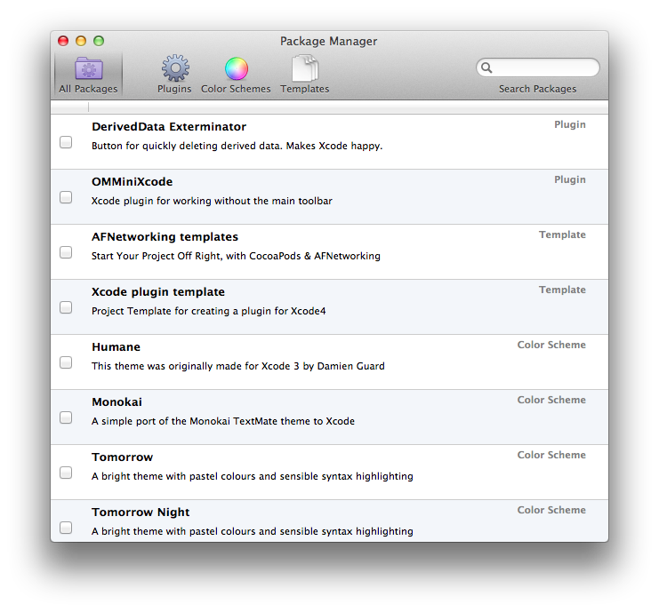

Alcatraz is an open-source package manager for Xcode. It lets you discover and install packages, without the need for manually cloning or copying files. It is installed as a part of Xcode, and it feels like home.
Install Alcatraz using Homebrew via brew install alcatraz, or download the repository from Github and build it in Xcode. You'll need to restart Xcode after the installation.
Check or uncheck packages to install or remove them.
Fork and edit the Alcatraz package repository to include your package name, description, and URL in the plugins, color schemes, or templates section, and submit a pull request.
{
"name": "My Life-Changing Xcode Plugin",
"url": "https://github.com/me/xcode-life-changing-plugin",
"description": "Makes Xcode stop, collaborate and listen."
}